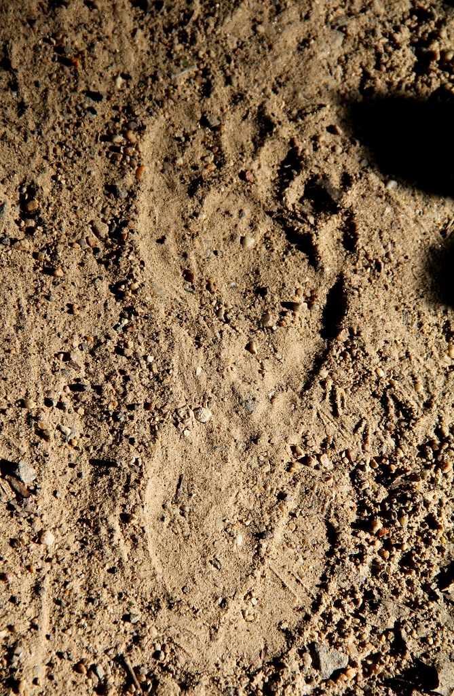

Follow Footprints

You decide to follow the footprints. Maybe you are closer to civilization than you think. As you follow them, you start to feel lost. You don't recognize the surrounding. You hear a laugh and try to find where it's coming from